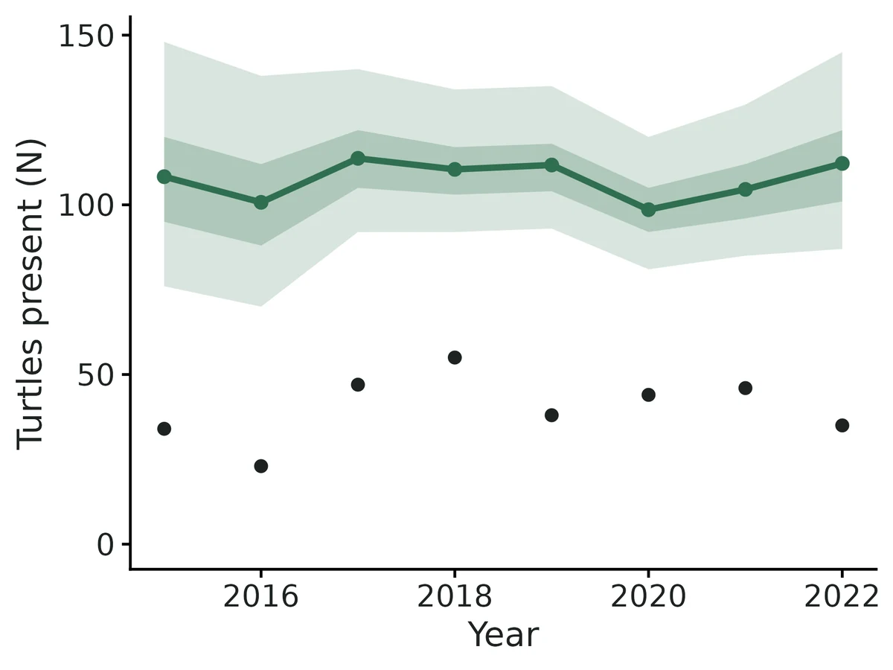
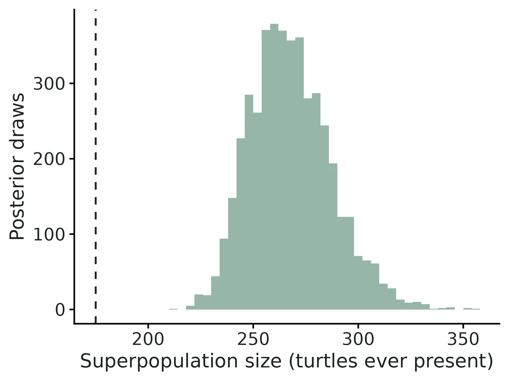
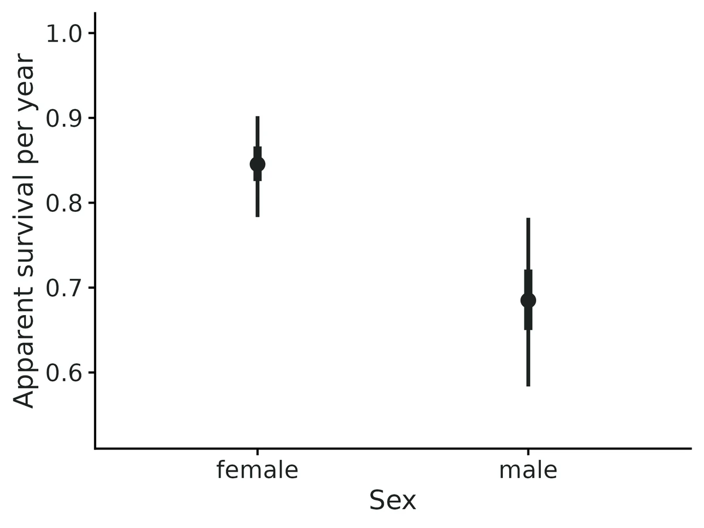
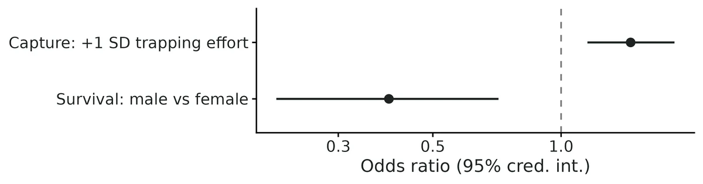

Jolly-Seber open-population capture-recapture (abundance, survival, recruitment)
"How many turtles lived in the pond each year? How many new animals joined the population (births plus immigrants) between years? What share survived and stayed? Do males survive less well than females? Is the population declining?"
Is this the right analysis?
Use it when
Individually marked animals (tags, PIT tags, bands, photo-ID, genetic ID) captured on 3+ occasions (usually years or seasons) in an open population, where the question is how many animals were present at each occasion, how many entered (births plus immigrants), how many survived, and whether the population is growing or declining.
Not for
Survival only, conditioning on first capture (use cjs); a single closed season (closed capture-recapture or scr); density per km2 or spatial capture histories (scr / scr-open); unmarked counts (nmixture / timeseries); populations with strong temporary emigration (needs a robust design, not provided here).
The data you need
One row per capture (animal ID + occasion, optional sex/group), or one capture-history string per animal; optional occasion table with interval lengths and occasion covariates for capture probability (effort).
What the example's main data file looks like:
| turtle_id | pit_tag | capture_date | season | trap | sex | carapace_mm | mass_g |
|---|---|---|---|---|---|---|---|
| AM-089 | 982.149470056 | 2015-05-21 | 2015 | HT02 | M | 164 | 585 |
| AM-150 | 982.176990615 | 2015-05-23 | 2015 | HT04 | F | 145 | 759 |
| AM-134 | 982.676811193 | 2015-05-23 | 2015 | HT10 | M | 127 | 814 |
| AM-082 | 982.146166475 | 2015-05-26 | 2015 | HT10 | F | 145 | 746 |
| AM-049 | 982.706174063 | 2015-05-26 | 2015 | HT11 | F | 141 | 790 |
Not sure? Use the finder to compare modules.
The worked example
Western pond turtle abundance, recruitment and survival from eight years of PIT-tag hoop-trapping (Jolly-Seber, simulated data with known truth)
A small team hoop-traps western pond turtles (Actinemys marmorata) at one pond complex every summer, 20 May to 3 August, from 2015 to 2022. Each new turtle gets a PIT tag and a field ID (AM-001, ...). Crews record sex, carapace length and mass. Some juveniles and a few adults could not be sexed; their sex is recorded as U. Effort varied between years (80-163 trap-nights), because the number of crew members changed.
The question: How many western pond turtles used the pond complex each year and over the whole study, how many new turtles joined each year, what share survive from year to year (and do males survive less well than females), and is the population declining?
The data are simulated, so the true answer is known and the analysis can be checked against it.
What the researcher typed
I have eight summers (2015 to 2022) of hoop-trapping data for western pond turtles at one pond complex, in two files: turtle_captures.csv (every capture, with the turtle's ID, the season and its sex; U means we could not sex it) and turtle_seasons.csv (trap-nights of effort in each season). I want to know how many turtles were there each year and in total, how many new turtles joined each year, what share survive from year to year and whether males survive less well than females, and whether the population is declining. Please analyse this and give me a report with figures I can use in a paper.
Run it yourself
Download the example data below and unzip it.
Open the unzipped folder in Claude Code (see Install).
Paste the prompt above. The agent checks the files, writes a plan, runs planted truth, fits the model and writes the report. You can compare your results with the ones below.
Contains turtle_captures.csv, turtle_seasons.csv, the settings file (config.yaml), a description of the data and a step-by-step walkthrough.
Study design details
| n occasions | 8 |
|---|---|
| years | 2015-2022 |
| interval years | 1 |
| n turtles | 175 |
| n female | 100 |
| n male | 65 |
| n unknown sex | 10 |
| capture rows | 459 |
| turtle seasons | 322 |
| caught per season | 34, 23, 47, 55, 38, 44, 46, 35 |
| new per season | 34, 17, 35, 27, 16, 15, 16, 15 |
| turtles caught once | 88 |
| trap nights | 80-163 (mean 120) |
| occasion covariate | trap_nights (capture probability) |
| group | sex (female reference; U = mixture) |
| engine | nimble marginal (forward algorithm), 3 chains x 20000 iter, burn-in 5000, thin 5; marked ML POPAN as cross-check |
| M | 875 |
Results from the example data

In plain language
- 175 western pond turtles were caught at least once over 8 occasions (2015 to 2022); 87 (50%) were caught on more than one occasion, and 40.2 were caught per occasion on average.
- Estimated abundance was 108 (95% CI 76 to 148) at the first occasion (2015) and 112 (95% CI 87 to 145) at the last (2022). Across the study the average growth rate was 1.006 (95% CI 0.960 to 1.055) per year, i.e. a change of +0.6% per year; the posterior probability that the population declined (growth rate < 1) is 0.39.
- In total 268 (95% CI 236 to 310) western pond turtles are estimated to have used the study population at some time during the study (the superpopulation), of which 175 (65%) were ever caught.
- Apparent survival per year was 0.85 (95% CI 0.78 to 0.90) for female and 0.68 (95% CI 0.58 to 0.78) for male. The odds of surviving were 0.39 times as high for male as for female (95% CI 0.21 to 0.71); posterior probability that male animals survive less well than female animals > 0.99.
- 'Apparent' survival means that death and permanent emigration cannot be told apart.
- Capture probability of an animal present was 0.37 (95% CI 0.31 to 0.44) at average sampling effort. Capture probability rose from 0.29 to 0.47 between trapping effort (trap-nights) = 90 and 150 (one SD below to one SD above the mean; odds ratio per SD 1.46, 95% CI 1.15 to 1.85). This is a sampling (detection) effect, not a change in the population.
- Agent caveat: the report's average per-capita recruitment (0.23, 95% CI 0.16-0.30) includes the 2015-2016 interval, which failed planted truth; read recruitment from 2016-17 onward (11-35 entrants per year).
More figures



Figures are the module's default publication figures, reduced for the web. The report also saves them as PDF and full-resolution PNG.
Planted truth at the example's design
Before trusting the example's results, the module was run on many simulated data sets with the same design and known true values. Each row is one quantity: did the method get it back? (What the thresholds are.)
Every interpreted estimand passes planted truth at this design (42/45 overall; N_t rel. bias -2.5% to +2.8%, coverage 0.925-0.965; survival -0.6% / +0.1%, coverage 0.955 / 0.95); fit converged (R-hat 1.001, min ESS 2583); PPC p 0.52 / 0.62 and all R2ucare p > 0.5; module cross-checked against marked and latent Nimble, negative controls in VALIDATION.md. First-interval recruitment (entrants_2, entry_prob_2, recruitment_rate_1) fails the bias criterion and is excluded from interpretation.
| This example | 8 annual occasions, 175 turtles caught (superpopulation 260), capture probability about 0.4 |
|---|---|
| Design the module was validated at | 8 annual occasions, superpopulation 350, capture probability 0.45 |
The example has the same number of occasions as the validated default, but a smaller population (superpopulation 260 against 350) and a slightly lower capture probability (0.40 against 0.45). At the default design all 45 estimands passed (yearly abundance +1.0 to +3.5%). At the example's own design 42 of 45 passed. The three failures were first-interval recruitment estimates (+26% to +47%), which matches the known limit that recruitment and small entry probabilities run high when few animals enter in an interval.
These calls sit close to the pass/fail line. With another 200 simulated data sets they could come out the other way, so read them as “about at the limit” rather than as a clear pass or fail.
- recruitment_rate_6 (✓ PASS): bias +8.5% against an allowance of ±10.0% (set by the 10% rule), so it used 85% of the allowance.
42 of 45 rows pass; 1 is borderline.
Show the full recovery table (45 rows)
| Quantity | True value | Average estimate | Bias | Allowed bias | Coverage (needed) | Result |
|---|---|---|---|---|---|---|
| abundance_1 | 117.8 | 114.8 | -2.6% | ±10.0% | 0.94 (0.904) | ✓ PASS |
| abundance_2 | 113.8 | 116.3 | +2.2% | ±10.0% | 0.94 (0.904) | ✓ PASS |
| abundance_3 | 109.9 | 112.2 | +2.1% | ±10.0% | 0.96 (0.904) | ✓ PASS |
| abundance_4 | 106.7 | 108.7 | +1.9% | ±10.0% | 0.96 (0.904) | ✓ PASS |
| abundance_5 | 104.9 | 107.6 | +2.6% | ±10.0% | 0.94 (0.904) | ✓ PASS |
| abundance_6 | 104.2 | 105.7 | +1.4% | ±10.0% | 0.96 (0.904) | ✓ PASS |
| abundance_7 | 102.6 | 105.3 | +2.7% | ±10.0% | 0.94 (0.904) | ✓ PASS |
| abundance_8 | 101.9 | 104.3 | +2.4% | ±10.0% | 0.93 (0.904) | ✓ PASS |
| detection | 0.4 | 0.401 | +0.2% | ±10.0% | 0.93 (0.904) | ✓ PASS |
| detection_beta_effort | 0.45 | 0.458 | +1.8% | ±10.0% | 0.97 (0.904) | ✓ PASS |
| entrants_2 | 20.8 | 25.6 | +22.9% | ±12.1%† | 0.97 (0.904) | ✗ FAIL |
| entrants_3 | 20.2 | 20.1 | -0.5% | ±10.0% | 0.97 (0.904) | ✓ PASS |
| entrants_4 | 19.6 | 19.8 | +0.8% | ±10.0% | 0.98 (0.904) | ✓ PASS |
| entrants_5 | 20.4 | 21.5 | +5.1% | ±10.0% | 0.97 (0.904) | ✓ PASS |
| entrants_6 | 20.5 | 19.9 | -3.0% | ±10.0% | 0.95 (0.904) | ✓ PASS |
| entrants_7 | 20.1 | 21.2 | +5.3% | ±10.0% | 0.95 (0.904) | ✓ PASS |
| entrants_8 | 20.5 | 20.2 | -1.4% | ±10.0% | 0.98 (0.904) | ✓ PASS |
| entry_prob_1 | 0.45 | 0.427 | -5.2% | ±10.0% | 0.95 (0.904) | ✓ PASS |
| entry_prob_2 | 0.0786 | 0.0987 | +25.6% | ±12.0%† | 0.97 (0.904) | ✗ FAIL |
| entry_prob_3 | 0.0786 | 0.0781 | -0.6% | ±10.0% | 0.99 (0.904) | ✓ PASS |
| entry_prob_4 | 0.0786 | 0.0772 | -1.8% | ±10.0% | 0.98 (0.904) | ✓ PASS |
| entry_prob_5 | 0.0786 | 0.0831 | +5.7% | ±10.0% | 0.98 (0.904) | ✓ PASS |
| entry_prob_6 | 0.0786 | 0.0771 | -1.9% | ±10.0% | 0.96 (0.904) | ✓ PASS |
| entry_prob_7 | 0.0786 | 0.0817 | +3.9% | ±10.0% | 0.97 (0.904) | ✓ PASS |
| entry_prob_8 | 0.0786 | 0.0774 | -1.5% | ±10.0% | 0.97 (0.904) | ✓ PASS |
| growth_rate_1 | 0.968 | 1.04 | +7.7% | ±10.0% | 0.96 (0.904) | ✓ PASS |
| growth_rate_2 | 0.967 | 0.976 | +0.9% | ±10.0% | 0.98 (0.904) | ✓ PASS |
| growth_rate_3 | 0.972 | 0.979 | +0.7% | ±10.0% | 0.99 (0.904) | ✓ PASS |
| growth_rate_4 | 0.986 | 0.999 | +1.4% | ±10.0% | 0.98 (0.904) | ✓ PASS |
| growth_rate_5 | 0.996 | 0.992 | -0.3% | ±10.0% | 0.96 (0.904) | ✓ PASS |
| growth_rate_6 | 0.986 | 1 | +1.9% | ±10.0% | 0.96 (0.904) | ✓ PASS |
| growth_rate_7 | 0.995 | 0.998 | +0.3% | ±10.0% | 0.94 (0.904) | ✓ PASS |
| growth_rate_mean | 0.98 | 0.988 | +0.8% | ±10.0% | 0.93 (0.904) | ✓ PASS |
| prop_male | 0.451 | 0.45 | -0.4% | ±10.0% | 0.98 (0.904) | ✓ PASS |
| recruitment_rate_1 | 0.178 | 0.253 | +41.7% | ±18.2%† | 0.97 (0.904) | ✗ FAIL |
| recruitment_rate_2 | 0.179 | 0.186 | +3.9% | ±10.6%† | 0.97 (0.904) | ✓ PASS |
| recruitment_rate_3 | 0.18 | 0.188 | +4.5% | ±10.4%† | 0.98 (0.904) | ✓ PASS |
| recruitment_rate_4 | 0.194 | 0.208 | +7.8% | ±10.0% | 0.98 (0.904) | ✓ PASS |
| recruitment_rate_5 | 0.197 | 0.197 | +0.2% | ±10.2%† | 0.95 (0.904) | ✓ PASS |
| recruitment_rate_6 | 0.195 | 0.211 | +8.5% | ±10.0% | 0.95 (0.904) | ✓ PASS ≈ borderline |
| recruitment_rate_7 | 0.202 | 0.203 | +0.5% | ±10.0% | 0.96 (0.904) | ✓ PASS |
| superpopulation_size | 260 | 263 | +1.1% | ±10.0% | 0.92 (0.904) | ✓ PASS |
| survival | 0.82 | 0.815 | -0.6% | ±10.0% | 0.95 (0.904) | ✓ PASS |
| survival_beta_male | -0.4 | -0.366 | +8.4% | ±13.9%† | 0.97 (0.904) | ✓ PASS |
| survival_male | 0.753 | 0.754 | +0.1% | ±10.0% | 0.95 (0.904) | ✓ PASS |
Limits that matter
- First-interval recruitment is weakly identified: 2016 entrants and entry probability +26%, 2015-16 per-capita recruitment +47% in planted truth (coverage 0.97-0.975); not interpreted (VALIDATION Known limit 3).
- Low power for the sex effect on survival at this design: 0.27 for logit -0.4 (200-replicate recovery). The example estimate (-0.93, 95% CI -1.54 to -0.34) is about twice the truth, so quote the interval.
- Temporary emigration is not modelled: in the negative control it inflated N_super +22% (coverage 0.43) and biased capture probability -33%; a robust design is needed to test it (Known limit 4).
- No individual capture heterogeneity or trap-dependence model: heterogeneity biased N about 20% low in the verifier negative control; here the PPC and R2ucare 2.CT did not flag it (Known limit 5).
- Survival is apparent (death plus permanent emigration); abundance counts turtles using the trapped ponds, not a density.
- The marked cross-check cannot use unknown-sex turtles (sex effect dropped, survival pooled) and reports expected rather than realised N_t (Known limit 6).
All known limits from the module's validation record
Low capture probability with few occasions (p = 0.2, T = 5).
- Posterior means of N_t are biased +11% to +24%, but intervals still cover (0.95-0.99).
- The sex effect on survival is not estimable (power 0.03, estimate shrunk 62% toward 0).
- Report intervals, use more occasions or effort, and run planted-truth recovery at the user's design before interpreting N_t.
- T = 4 occasions. N_t posterior means are biased about +11% (gate fails on 3 of 25 estimands). 5 or more occasions are recommended.
- Per-capita recruitment and small entry probabilities.
recruitment_rate_tis a ratio of two small, uncertain counts, and a smallentry_prob_tis pulled toward the Dirichlet(1) prior mean 1/T. Their posterior means can be biased upward when few animals enter in an interval:recruitment_rate_1+41% at T = 12 and +31% in the hard design; in the independent verificationentry_prob_5(truth 0.08, about 18 entrants after a half-year interval) was +11% andrecruitment_rate_4+19%, with coverage 0.99-1.00. ML POPAN does worse there (MLE on the boundary, -65%). Interpret these through their intervals or throughentrants_t. - Temporary emigration is not modelled. The negative control shows that it inflates N_super (+22%, coverage 0.43) and biases capture probability (-33%). A robust design (Kendall et al. 1997) is needed; this module does not provide one.
- No individual capture heterogeneity, trap-dependence or transient model. These are flagged only by the R2ucare tests and the PPC. Entry probabilities have no covariates.
The marked cross-check engine:
- cannot use animals of unknown group (the group effect is dropped);
- gives expected rather than realised N_t;
- gives unreliable simulated intervals when an entry probability is on its boundary.
Use it for point-estimate comparison only.
- marked starting values. marked's starting-value routine fails (NA/NaN in the initial evaluation) when given a standardised occasion covariate. The module therefore passes raw covariate values to marked and rescales the slope. This was found and fixed during validation: the first marked recovery had 100/100 replicates fail, and after the fix 0/100 failed.
- Latent engine speed. The
latentapproach (z sampled) took about 39 times as long as the marginal default at the default design (3189 s vs 82 s; see 4b). Use it only as a check. - Fast settings are for recovery only. Real data use 20000 iterations and 3 chains (thin 5). On the example this gives R-hat 1.001 and min ESS 2583.
How this module was validated
- 100 simulated datasets per design, fitted with Nimble (3 chains x 6,000 iterations, 2,000 burn-in, thin 2). To pass, bias had to be within 10% (or 3 Monte Carlo SE) and coverage (how often the 95% interval contained the truth) at least 0.885. The likelihood was checked against an explicit sum over all paths (difference 2.8e-17).
- Default design: 45 of 45 estimands passed. A hard design (capture 0.2, 5 occasions) failed 9 of 30: abundance was +11.4 to +23.8%, and the sex effect on survival could not be estimated (power 0.03).
- Negative control: ignoring temporary emigration inflated the superpopulation by 22.2% (coverage 0.43) and biased capture probability 33% low. The gate failed, as it should.
- False-positive rates with no true effects: 0.06 for the survival effect and 0.03 for the effort effect.
- Cross-checks: maximum-likelihood POPAN (marked package) passed 45 of 45 on its own recovery run. On the same data, the latent-state Nimble model agreed within 0.04 posterior SD and marked within 0.32 SD.
- Power: for the sex effect on survival, power rose from 0.18 with 4 occasions to 0.74 with 10. With 4 occasions, abundance was about 11% too high.
- A separate verifier agent used its own simulator (unequal intervals, 15% unknown sex). It got 33 of 35 for the main design and 34 of 35 under no true effects, and its negative control for individual capture heterogeneity failed as it should (15 of 35 passed).
Every run uses the acceptance gate described on the validation page. The full record follows, section by section, exactly as kept in the module's VALIDATION.md.
Settings and pass/fail rule used for every run
All runs used bin/Rscript core/run.R recover|power on njobvu (16 cores), with fast_settings: 3 chains, 6000 iterations, 2000 burn-in, thin 2, and 500 retained draws per chain for the derived latent counts. Gate thresholds are the fixed core ones:
bias <= max(10% of truth, 3 MC SE) - coverage >= 0.95 - 3 MC SE (0.885 at n = 100, floor 0.80)
- >= 90% of replicates converged (max R-hat < 1.05)
The raw outputs are in results/jolly-seber/recover_*/ (*_reps.csv, *_summary.csv, gate_table.txt, HTML report). Configs are in dev/jolly-seber/*.yaml.
0. Engine correctness checks
- Forward algorithm vs path sum. The likelihood from the three-state forward algorithm equals the explicit sum over all T(T+1)/2 + 1 latent paths for every unique history and group. Max abs difference: 2.8e-17.
- Compiled vs R. The compiled Nimble
dJSmarg_ecolog-likelihood equals the R forward log-likelihood: -2031.029 vs -2031.029, difference 0. - Timing. One default fit with fast settings took 62 s including compilation and 7 s with the cached model. With default real-data settings (20000 iterations x 3 chains) on the example it took 44 s.
1. Default design: PASS (45/45 estimands), nsim = 100
Design and truth:
- 8 annual occasions, superpopulation 350.
- Entry: b_1 = 0.35, then 0.093 per occasion.
- Survival: 0.75 per year for females; male effect -0.5 on the logit scale.
- Sex ratio 0.5.
- Capture: p = 0.45 at mean effort; effort effect +0.5 per SD.
All 100 replicates converged (max R-hat < 1.05 in 100%; 90th percentile of max R-hat 1.009). Median time per replicate: 10.9 s.
| estimand | truth (mean) | mean est | rel. bias % | coverage | mean 95% CI width | gate |
|---|---|---|---|---|---|---|
| superpopulation_size | 350 | 354 | +1.3 | 0.95 | 79.5 | PASS |
| abundance_1 | 124 | 127 | +2.8 | 0.97 | 69.4 | PASS |
| abundance_2 | 121 | 122 | +1.0 | 0.96 | 52.1 | PASS |
| abundance_3 | 117 | 119 | +2.0 | 0.97 | 48.8 | PASS |
| abundance_4 | 113 | 117 | +3.5 | 0.97 | 48.4 | PASS |
| abundance_5 | 112 | 115 | +2.0 | 0.95 | 46.4 | PASS |
| abundance_6 | 111 | 114 | +2.6 | 1.00 | 46.7 | PASS |
| abundance_7 | 111 | 114 | +2.5 | 0.99 | 47.6 | PASS |
| abundance_8 | 109 | 112 | +2.2 | 0.97 | 50.4 | PASS |
| entrants_2..8 | 31.5-33.2 | 30.7-33.3 | -3.5 to +5.2 | 0.95-1.00 | 41-55 | PASS (all 7) |
| entry_prob_1 | 0.350 | 0.353 | +0.9 | 0.99 | 0.189 | PASS |
| entry_prob_2..8 | 0.093 | 0.087-0.095 | -6.2 to +2.1 | 0.92-0.98 | 0.12-0.16 | PASS (all 7) |
| recruitment_rate_1..7 | 0.27-0.30 | 0.284-0.304 | -1.4 to +8.8 | 0.94-0.99 | 0.42-0.56 | PASS (all 7) |
| growth_rate_1..7 | 0.97-1.00 | 0.98-1.01 | -0.1 to +2.8 | 0.95-0.99 | 0.44-0.56 | PASS (all 7) |
| growth_rate_mean | 0.982 | 0.983 | +0.1 | 0.98 | 0.086 | PASS |
| survival (female) | 0.750 | 0.747 | -0.4 | 0.96 | 0.127 | PASS |
| survival_male | 0.645 | 0.649 | +0.6 | 0.92 | 0.155 | PASS |
| survival_beta_male | -0.50 | -0.472 | +5.5 (toward 0) | 0.94 | 0.895 | PASS (power 0.54) |
| prop_male (realised) | 0.501 | 0.498 | -0.6 | 0.96 | 0.079 | PASS |
| detection | 0.450 | 0.448 | -0.5 | 0.97 | 0.145 | PASS |
| detection_beta_effort | 0.50 | 0.510 | +2.0 | 0.97 | 0.492 | PASS (power 1.00) |
The full per-estimand table is in results/jolly-seber/recover_default/gate_table.txt.
N_t, entrants, recruitment and growth rates are compared with the realised values in each simulated population. Entry probabilities, survival and capture are compared with the generating parameters. prop_male is the realised share of males in the superpopulation.
> History. A first run defined prop_male as the hyperparameter pi. > Coverage was 0.96 in one run and 0.88 in another, against a bound of > 0.885. The marked engine, which estimates the realised share, had > coverage 0.82 against that truth. The estimand was redefined as the > realised share in all engines and in the simulation truth, because that > is the biologically meaningful quantity (the sex ratio of the animals > that used the site). All runs were then repeated, and the numbers above > are from the rerun. The gate thresholds were not changed.
2. Harder design (p = 0.2, 5 occasions): FAIL on 9 of 30 estimands, nsim = 100
Same parameters as the default, but capture probability 0.2 and 5 occasions. 96 of 100 replicates converged under fast settings (max R-hat < 1.05), so the convergence criterion passes. No replicate crashed.
| estimand | truth | mean est | rel. bias % | coverage | gate |
|---|---|---|---|---|---|
| superpopulation_size | 350 | 377 | +7.8 | 0.96 | PASS |
| abundance_1..5 | 124-175 | 138-216 | +11.4 to +23.8 | 0.95-0.99 | FAIL (bias) |
| entry_prob_3 | 0.162 | 0.145 | -10.9 | 1.00 | FAIL (bias, marginal) |
| growth_rate_1 | 1.15 | 1.31 | +14.0 | 0.98 | FAIL (bias) |
| recruitment_rate_1 | 0.452 | 0.587 | +31.5 | 0.98 | FAIL (bias) |
| survival_beta_male | -0.50 | -0.19 | 62% toward 0 | 0.98 | FAIL (bias; power 0.03) |
| survival / survival_male | 0.75 / 0.645 | 0.752 / 0.700 | +0.2 / +8.5 | 1.00 / 0.96 | PASS |
| detection, detection_beta_effort | 0.20 / 0.50 | 0.202 / 0.542 | +1.0 / +8.4 | 0.95 / 0.98 | PASS |
| other entry_prob, growth, recruitment, entrants | -6.4 to +13.1 (within 3 MC SE) | 0.97-1.00 | PASS |
Interpretation:
- With roughly 30 animals caught per occasion out of about 150, posterior means of N_t are pulled up by the long right tail of the posterior. The 95% intervals are honest (coverage 0.95-0.99) but very wide (mean width 180-280 animals, more than the abundance itself).
- The sex effect on survival is not identifiable at this design. The posterior is the prior shrunk toward 0 (power 0.03).
- This is the module's design limit; see Known limits.
3. Negative controls
3a. Temporary emigration ignored: gate FAILS (25 of 45 estimands), nsim = 100
Data were simulated with Markovian temporary emigration: present animals leave with probability 0.35 per occasion, and absent animals return with probability 0.4. The standard JS model, which assumes no temporary emigration, was then fitted.
| estimand | truth | mean est | rel. bias % | coverage |
|---|---|---|---|---|
| superpopulation_size | 350 | 428 | +22.2 | 0.43 |
| abundance_1 | 122 | 173 | +41.4 | 0.51 |
| abundance_8 | 111 | 123 | +10.3 | 0.90 |
| detection | 0.45 | 0.301 | -33.2 | 0.11 |
| survival | 0.75 | 0.707 | -5.7 | 0.83 |
| growth_rate_mean | 0.987 | 0.952 | -3.6 | 0.68 |
| recruitment_rate_1 / entrants_2 | -37 / -21 | 0.85 / 0.99 |
The gate catches the misspecification. Capture probability absorbs the unavailability, N_super and early N_t are inflated, and survival is biased low. The posterior predictive checks run on real data are designed to flag this kind of misfit, together with the R2ucare tests.
3b. False-positive rate with no effects, nsim = 100
Truth: survival_beta_male = 0 and detection_beta_effort = 0. All 45 estimands pass the gate.
| effect | null value | rejection rate (95% CI excludes 0) | coverage |
|---|---|---|---|
| survival_beta_male | 0 | 0.06 | 0.94 |
| detection_beta_effort | 0 | 0.03 | 0.97 |
4. Cross-checks against independent implementations
4a. marked (maximum-likelihood POPAN, Laake et al. 2013): independent recovery, nsim = 100
The same default design was fitted with settings: engine: marked and seed 5. All 45 estimands pass. 98 of 100 fits converged (Hessian invertible).
| estimand | truth | marked mean | rel. bias % | coverage |
|---|---|---|---|---|
| superpopulation_size | 350 | 345 | -1.3 | 0.97 |
| abundance_1..8 | 111-122 | 108-119 | -2.6 to -0.4 | 0.95-1.00 |
| survival / survival_male | 0.75 / 0.645 | 0.745 / 0.640 | -0.6 / -0.8 | 0.93 / 0.95 |
| survival_beta_male | -0.5 | -0.501 | -0.3 | 0.95 (power 0.57) |
| detection / detection_beta_effort | 0.45 / 0.5 | 0.460 / 0.515 | +2.3 / +3.0 | 0.99 / 0.96 |
| prop_male | 0.499 | 0.496 | -0.5 | 0.96 |
Both the Nimble data-augmentation fit and the ML POPAN fit recover the same truth. The Nimble posterior means of N_t are 2-3% high and the marked MLEs are 0.4-2.6% low, both well within the gate. That is the usual behaviour of a right-skewed posterior mean against an MLE.
4b. Same-data comparison: nimble marginal vs nimble latent vs marked
Script: dev/jolly-seber/crosscheck.R 10. Ten datasets were simulated at the default design (seeds 901-910). Each was fitted three ways: the default Nimble marginal (forward-algorithm) engine, the textbook Nimble latent RDO model with every z[i,t] sampled (same M), and marked ML POPAN. Differences are expressed in units of the marginal fit's posterior SD (z = (est - est_marginal) / sd_marginal), averaged over the 10 datasets, for 26 shared estimands (N_super, N_1..8, entrants_2..8, entry_prob_1, survival, survival_male, survival_beta_male, detection, detection_beta_effort, growth_rate_mean, prop_male).
| comparison | max over estimands of mean z | max single-dataset abs z | posterior SD ratio |
|---|---|---|---|
| nimble latent vs marginal | 0.04 | 0.31 | 0.98-1.02 |
| marked ML vs nimble marginal | 0.32 | 1.29 | 1.00-1.78 |
- latent vs marginal agree to MCMC noise on every estimand: the two Nimble formulations are the same posterior. Max R-hat over all latent fits was 1.04.
- marked vs nimble: marked MLEs of N_super and N_t are about 0.3 posterior SD lower than the posterior means (mean over 10 datasets: N_super 354.8 vs 361.7, truth 350; N_8 115.2 vs 120.0, truth 111.2). That is the expected gap between an MLE and the mean of a right-skewed posterior. Survival (0.738 vs 0.741, truth 0.75) and survival_male (0.638 vs 0.645, truth 0.645) agree closely. marked's simulated intervals for N_t and entrants are up to 1.8 times wider (expected-abundance intervals from coefficient simulation; see Known limits 6).
- Speed (median wall time per dataset, one core, including compilation): marked 5 s, nimble marginal 82 s, nimble latent 3189 s (about 39 times the marginal engine).
4c. Example dataset (western pond turtles, example/)
On the example, the Nimble marginal fit and marked agree on point estimates:
| estimand | nimble marginal | marked |
|---|---|---|
| superpopulation_size | 268.3 (236-310) | 263.6 |
| abundance_1 (2015) | 108.3 | 114.2 |
| abundance_4 (2018) | 110.4 | 108.3 |
| abundance_8 (2022) | 112.2 | 111.2 |
| detection | 0.374 | 0.375 |
| detection_beta_trap_nights | 0.376 | 0.388 |
Two differences come from known engine limits, not from disagreement:
- Survival. marked dropped the sex effect because 10 animals have unknown sex, so its survival (0.794) is pooled over both sexes. Nimble gives 0.845 for females and 0.685 for males, with 43% males.
- Intervals. marked's simulated intervals for some N_t and growth rates are degenerate (lower limit near 0, upper limit in the thousands). This happens because one entry probability lies on its boundary and its multinomial-logit SE is huge.
Truth (TRUTH.txt):
- N_super = 260 (Nimble 268, CI 236-310)
- female survival 0.82 (0.845, CI 0.78-0.90)
- male survival 0.753 (0.685, CI 0.58-0.78)
- p = 0.40 (0.374, CI 0.31-0.44)
- effort effect 0.45 (0.376, CI 0.14-0.61)
All truth values lie inside the 95% intervals.
Convergence on the example with default real-data settings: max R-hat 1.001, min bulk ESS 2583. Both meet the real-data standard (R-hat < 1.01, ESS >= 400). PPC Bayesian p-values were 0.52 and 0.62, and no R2ucare test had p < 0.05.
5. Power over a design knob: number of occasions, nsim = 50 per value
core/run.R power jolly-seber --vary n_occasions=4,5,6,8,10,12 --nsim 50. All other settings were at the defaults (N_super 350, p 0.45, male effect -0.5, effort effect +0.5/SD).
| n_occasions | 4 | 5 | 6 | 8 | 10 | 12 |
|---|---|---|---|---|---|---|
| power, survival_beta_male | 0.18 | 0.22 | 0.50 | 0.64 | 0.74 | 0.70 |
| power, detection_beta_effort | 0.74 | 0.90 | 0.92 | 0.98 | 1.00 | 1.00 |
| N_super rel. bias % / coverage | +3.0 / 0.98 | +2.5 / 0.96 | +1.7 / 0.92 | +0.8 / 0.98 | -0.1 / 0.98 | +0.2 / 0.98 |
| survival 95% CI width | 0.30 | 0.22 | 0.17 | 0.13 | 0.11 | 0.10 |
| estimands failing the gate | 3 of 25 | 0 of 30 | 0 of 35 | 0 of 45 | 0 of 55 | 1 of 65 |
Gate failures:
- T = 4. N_1, N_2 and N_4 are biased +11 to +12%; their coverage is 0.92-0.96.
- T = 12.
recruitment_rate_1is biased +41% (coverage 0.96). With entry spread over 11 later occasions, about 20 animals enter in the first interval, and the ratio B/N is right-skewed.
The curve rises with the number of occasions (0.18 at T = 4 to 0.74 at T = 10). The 0.70 at T = 12 is within Monte Carlo error of 0.74 (SE about 0.065 at nsim = 50).
Independent verification (2026-10-20, separate verifier agent)
Scripts: dev/jolly-seber/verify/ (verify_sim.R, marked_main.R, messy_test.R, gate_check.R, run_verify.sh). Results: results/jolly-seber/verify/. All fits ran on njobvu through bin/ejob.
Code and literature review. The model was checked line by line against Schwarz & Arnason (1996), Kery & Schaub (2012, ch. 10, superpopulation formulation) and the marked documentation (N = n + f0 with log link, multinomial-logit pent over occasions 2..T). The entry hazards gamma_t = psi b_t / (1 - psi sum_{k<t} b_k) telescope to P(enter at t) = psi b_t and P(never enter) = 1 - psi, as the superpopulation formulation requires. The 3-state forward algorithm (not entered / alive / dead), survival phi^dt per time unit, the path sampler for N_t, B_t and N_super, and the derived quantities (B_{t+1}/N_t, N_{t+1}/N_t, (N_T/N_1)^(1/sum dt), prop = realised share in the superpopulation) all match the stated model. The marked derived quantities use the same definitions. No defect was found.
Independent planted truth. The verifier wrote its own individual-based simulator (no module code). It uses a design unlike the builder's: 6 dated occasions at unequal spacing (1, 2, 1, 0.5, 1 years), non-uniform entry probabilities (0.45, 0.15, 0.10, 0.12, 0.08, 0.10), N_super 220, female survival 0.70 per year, male effect +0.6, 40% males, 15% of captured animals of unknown sex (mixture path), p = 0.5 at mean effort, and a negative effort effect of -0.4 per SD. Each dataset was written as field-format CSVs (one row per capture, with duplicate captures, dates, and a sessions table with start dates and trap-nights) and read back through read_data(), check_data() and fit() with fast settings. Median time per fit was 10 s.
| scenario | nsim | gate | notes |
|---|---|---|---|
| main (effects as above) | 120 | 33/35 pass | N_super +1.0%, cov 0.93; N_t +1.6 to +3.8%, cov 0.95-0.98; survival +1.0%, cov 0.94; survival_beta_male +0.5%, cov 0.97, power 0.45; detection -0.7%, cov 0.98; detection_beta -0.37 vs -0.40, cov 0.95, power 0.75; prop_male +0.3%; growth_rate_mean +0.6% |
| main: failures | entry_prob_5 +11.4% (cov 0.99) and recruitment_rate_4 +19.0% (cov 1.00); see below | ||
| null (both effects 0) | 100 | 34/35 pass | false-positive rate 0.04 (sex effect on survival) and 0.05 (effort effect); only recruitment_rate_4 fails (+18.5%) |
| negative control: individual capture heterogeneity (logit-normal SD 1.5), not in the model | 100 | 15/35 pass | N_super -18.7%, cov 0.04; N_t -22 to -24%; detection +32%, cov 0.10. The gate fails, as it should. |
The two failures concern the occasion that follows the half-year interval (occasion 5, truth b_5 = 0.08, about 18 entrants). Refitting the same 120 datasets with the marked ML engine (marked_main.R) gave entry_prob_5 0.028 (-65%, MLE often on the 0 boundary) and recruitment_rate_4 -70%. So these quantities are weakly identified at this design. The Bayesian posterior mean, pulled toward the Dirichlet prior mean 1/T, errs upward by less, and its intervals cover. This is not a coding error. It is now in Known limits 3 and the README pitfalls.
Builder's recovery reproduced. The verifier reran core/run.R recover jolly-seber --nsim 100 --seed 1 and the temporary-emigration negative control (negctrl_te.yaml, seed 3). It got identical numbers: default 45/45 pass; negative control 20/45 pass (25 fail: N_super +22%, cov 0.43; detection -33%, cov 0.11). The builder's null run also passes recovery_gate() 45/45 (false-positive rates 0.06 and 0.03).
Usability. The messy-data test (messy_test.R) covers: NA or blank animal IDs (rows dropped, with a note giving the file rows); a misspelled season ("2O17": error naming the value and listing the valid seasons); a season missing from the occasions table; NA season; a wrong ID or sex column name; NA or non-numeric effort ("80 nights"); unrecognised sex codes ("f": check_data names it and says to recode); and trailing spaces in IDs (trimmed). Every case gives a clear, actionable message. Changed: a missing column now also suggests the near match ("Did you mean 'TurtleID'?").
The example report was rebuilt and read. Every number in the interpretation was checked against the estimates table: counts, percentages, odds ratio exp(beta) and its interval, the effort range mean +/- SD, and P(decline). Detection is described as a sampling effect, survival as "apparent", and there is no causal language. The required figures (abundance_trajectory, recruitment, survival_sex, detection_time, detection_trap_nights as the conditional effect on the response scale in trap-nights, gof, trace, posterior) are present, and their values agree with fit$estimates. Changed: two awkward sentences were reworded ("Animals with sex = male made up ...", "male animals survive less well than female animals"). In growth_rate the no-change line at 1 was hidden under the mean-growth line, so it is now redrawn on top.
Verdict: VERIFIED_WITH_LIMITS. The gate passes at the builder's default design and at an independent design, except for weakly identified small entry probabilities and per-interval recruitment rates (documented). The negative controls fail the gate, and the false-positive rates are 0.03-0.06.
Reproduce
bin/ejob -c 16 -m 48 -t 3:00:00 -- bash dev/jolly-seber/rerun_all.sh # sections 1, 2, 3a, 3b, 4a
bin/ejob -c 10 -m 40 -t 2:00:00 -- bin/Rscript dev/jolly-seber/crosscheck.R 10 # section 4b
bin/ejob -c 16 -m 32 -t 3:00:00 -- bin/Rscript core/run.R power jolly-seber --vary n_occasions=4,5,6,8,10,12 --nsim 50 --cores 16 --seed 6 --out results/jolly-seber/power_occasions
bin/Rscript core/run.R fit jolly-seber --config modules/jolly-seber/example/config.yaml --out results/jolly-seber/exampleEngine, references and full details
Engine: nimble (Bayesian data augmentation, restricted dynamic occupancy formulation; marginal forward-algorithm likelihood by default, latent z sampler as an option); marked (maximum-likelihood POPAN) as an independent cross-check.
References
- Jolly GM (1965) Explicit estimates from capture-recapture data with both death and immigration-stochastic model. Biometrika 52:225-247.
- Seber GAF (1965) A note on the multiple-recapture census. Biometrika 52:249-259.
- Crosbie SF, Manly BFJ (1985) Parsimonious modelling of capture-mark-recapture studies. Biometrics 41:385-398.
- Schwarz CJ, Arnason AN (1996) A general methodology for the analysis of capture-recapture experiments in open populations. Biometrics 52:860-873.
- Pradel R (1996) Utilization of capture-mark-recapture for the study of recruitment and population growth rate. Biometrics 52:703-709.
- Kendall WL, Nichols JD, Hines JE (1997) Estimating temporary emigration using capture-recapture data with Pollock's robust design. Ecology 78:563-578.
- Royle JA, Dorazio RM (2008) Hierarchical Modeling and Inference in Ecology. Academic Press (Jolly-Seber as restricted dynamic occupancy via data augmentation).
- Royle JA, Dorazio RM (2012) Parameter-expanded data augmentation for Bayesian analysis of capture-recapture models. Journal of Ornithology 152(S2):521-537.
- Kéry M, Schaub M (2012) Bayesian Population Analysis using WinBUGS. Academic Press, ch. 10.
- Dorazio RM (2020) Objective prior distributions for Jolly-Seber models of zero-augmented data. Biometrics 76:1285-1296.
- Saracco JF, Yackulic CB (2023) Fast and flexible Bayesian Jolly Seber models and application to populations with transients. bioRxiv doi:10.1101/2023.05.25.542303.
- Yackulic CB, Dodrill M, Dzul M, Sanderlin JS, Reid JA (2020) A need for speed in Bayesian population models: a practical guide to marginalizing and recovering discrete latent states. Ecological Applications 30:e02112.
- Laake JL, Johnson DS, Conn PB (2013) marked: an R package for maximum likelihood and MCMC analysis of capture-recapture data. Methods in Ecology and Evolution 4:885-890.
- Gimenez O, Lebreton J-D, Choquet R, Pradel R (2018) R2ucare: an R package to perform goodness-of-fit tests for capture-recapture models. Methods in Ecology and Evolution 9:1749-1754.